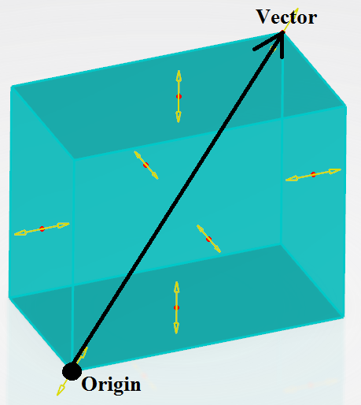

Abstract
The following reference article describes the different types
of groups, their attributes and usage.
This paper describes how to access to:
This paper explains attributes of seven type of groups:
|
Group creation can be managed the SimGroupSet object by calling
the Add method from it.
A "late type" must be given to indicate which type of group is to be
created:
| Group |
Late type |
| Geometric Group |
CATFmtGroupByAssociativity |
| Proximity Group |
CATFmtGroupByProximity |
| Spatial Group |
CATFmtGroupSpatial |
| Boundary Group |
CATFmtGroupByBoundary |
| Union Group |
CATFmtGroupUnion |
| Intersection Group |
CATFmtGroupIntersection |
| Difference Group |
CATFmtGroupDifference |
Group type can be set by the SetGroupType method of
the SimGroup object.
A string must be given to indicate which kind of elements
the group will contain:
| String |
Description |
| CATFmtGroupTypeNode |
The group contains only the nodes of the support |
| CATFmtGroupTypeEdge |
The group contains only edges |
| CATFmtGroupTypeFace |
The group contains only 3D elements faces of the support |
| CATFmtGroupTypeElement |
The group contains only elements of the support |
The support of the groups is managed by the SimLinkAccess object:
- AddLink ( iName As String, iLink As AnyObject )
- RemoveAllLinks ( iName As String )
- RemoveLink ( iName As String, iLink As AnyObject )
- iName is the name of the link container, here it's :
- "MainSupport" for all the groups which need a support.
- "Boundary" to specify boundary geometry of boundary group.
- "MainSupport" for the Groups A support list of difference group.
- "DifferenceGroups" for the Groups B support list of difference group.
CnxElementAllowed (type integer): valuated to:
- 1: to don't allow connection element in the group content
- 2: to allow connection element in the group content
|
Attribute which specifies if connection elements are allowed in the group content. |
| Tolerance (type double): valuated to group tolerance. |
Attribute which specifies the tolerance in which the
mesh entities will be captured. |
CnxElementAllowed (type integer): valuated to:
- 1: to don't allow connection element in the group content
- 2: to allow connection element in the group content
|
Attribute which specifies if connection elements are allowed in the group content. |
Mode (type integer): valuated to:
- 1: to get a box mode
- 2: to get a sphere mode
|
Attribute which specifies the kind of the bounding selection |
The following attributes are used to define the box in case of spatial group with a box mode.
- OriginX (type double): the X coordinate of the lower left corner of the box
- OriginY (type double): the Y coordinate of the lower left corner of the box
- OriginZ (type double): the Z coordinate of the lower left corner of the box
- Vector0X (type double): the dimension of the box along the X axis
- Vector1Y (type double): the dimension of the box along the Y axis
- Vector2Z (type double): the dimension of the box along the Z axis
|
The box is defined by its lower left corner and a vector transforming it into the upper right corner,
as shown on the picture below.

|
The following attributes are used to define the sphere in case of spatial group with a sphere mode.
- CenterX (type double): the X coordinate of the sphere center
- CenterY (type double): the Y coordinate of the sphere center
- CenterZ (type double): the Z coordinate of the sphere center
- Radius (type double): the radius of the sphere
|
Attributes which specifies the sphere |
CnxElementAllowed (type integer): valuated to:
- 1: to don't allow connection element in the group content
- 2: to allow connection element in the group content
|
Attribute which specifies if connection elements are allowed in the group content. |
|
No specific attribute for this group.
|
CnxElementAllowed (type integer): valuated to:
- 1: to don't allow connection element in the group content
- 2: to allow connection element in the group content
|
Attribute which specifies if connection elements are allowed in the group content. |
CnxElementAllowed (type integer): valuated to:
- 1: to don't allow connection element in the group content
- 2: to allow connection element in the group content
|
Attribute which specifies if connection elements are allowed in the group content. |
CnxElementAllowed (type integer): valuated to:
- 1: to don't allow connection element in the group content
- 2: to allow connection element in the group content
|
Attribute which specifies if connection elements are allowed in the group content. |
History
| Version: 1 [Oct 2014] |
Document created |